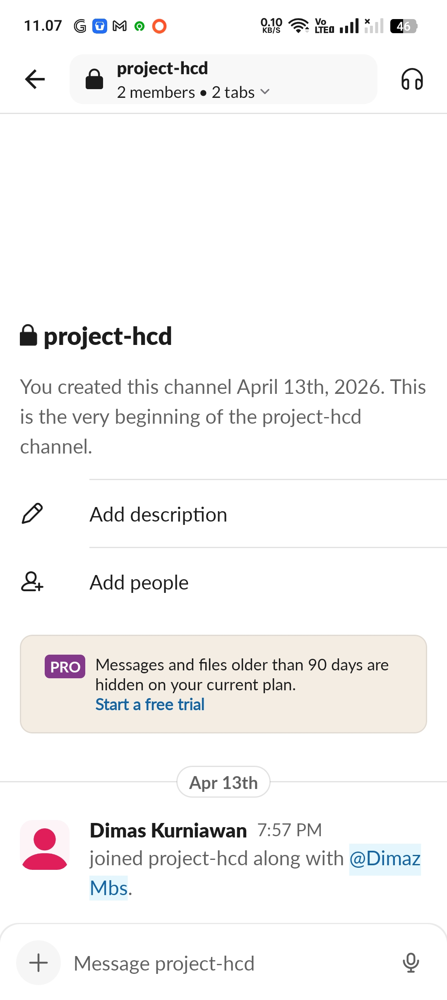
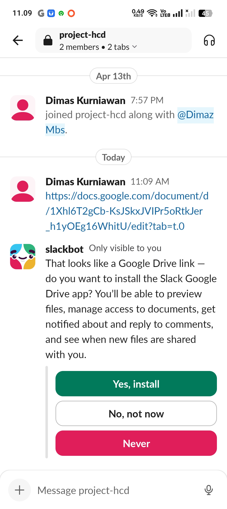
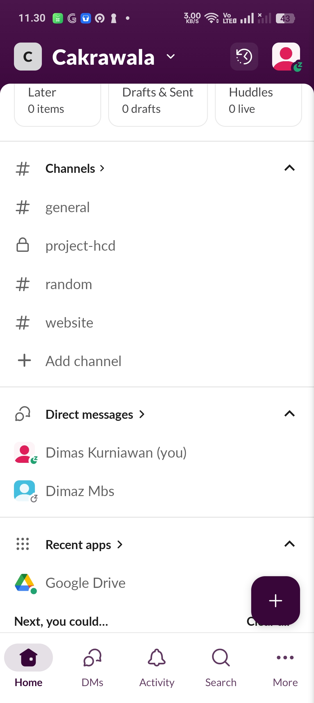
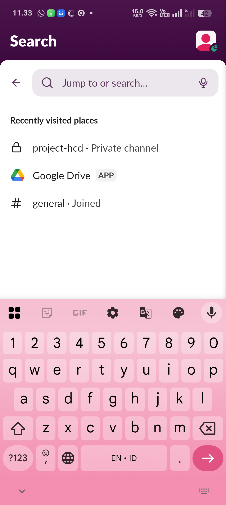
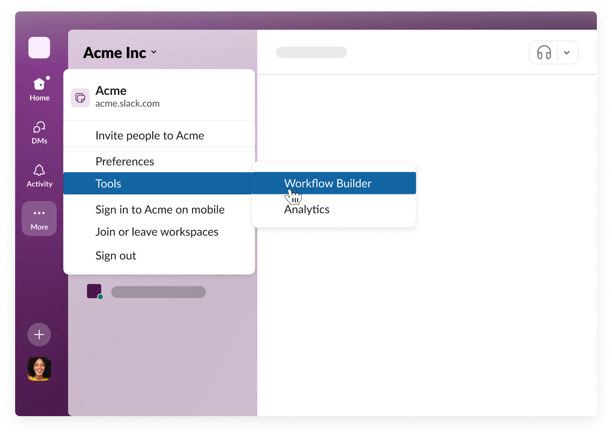

Profil Platform & Identifikasi Masalah
Apa itu Slack?
Slack adalah platform kolaborasi tim berbasis cloud yang memungkinkan komunikasi real-time, berbagi file, dan integrasi dengan berbagai alat produktivitas. Diluncurkan pada tahun 2013, Slack telah menjadi standar industri untuk komunikasi internal perusahaan, digunakan oleh lebih dari 10 juta pengguna aktif harian di seluruh dunia.
Pencetus / Founders
Stewart Butterfield, Eric Costello, Cal Henderson, & Serguei Mourachov
Asal & Kantor Pusat
Dirintis di Vancouver, Kanada (Tiny Speck Inc.) | HQ: San Francisco, AS
🎯 Eksplorasi Fungsi Utama & Antarmuka

✓ Komunikasi Real-time

✓ Berbagi File Terpusat
Drag-and-drop file ke dalam channel dengan preview dokumen.

✓ Integrasi 2.400+ Aplikasi
Koneksi langsung ke Google Drive, Zoom, dan Jira.

✓ Pencarian Riwayat Kuat
Filter pencarian berdasarkan tanggal, orang, dan tipe file.

✓ Slack Workflow Builder Premium
Otomatisasi tugas rutin tanpa kode yang tersedia pada paket Pro ke atas.
⚙️ Fitur yang Relevan
📢 Channels
Ruang diskusi per topik/proyek.
🔔 Notifikasi
Alert mention & keyword.
🧵 Threads
Diskusi terpisah dalam pesan.
🌙 Do Not Disturb
Mode jangan ganggu.
Analisis Hambatan (Problem Identification)
"Tahap awal dalam User-Centered Design (UCD) adalah memahami hambatan pengguna. Pada Slack, ledakan informasi saat ini menjadi kontra-produktif bagi kolaborasi tim."
🔍 Masalah Utama
- Information Overload: Jumlah channel yang tidak terkendali menyebabkan penyebaran informasi tidak terpusat.
- Notification Fatigue: Notifikasi berlebihan tanpa sistem prioritas yang merusak fokus kerja.
- Data Fragmentation: Kesulitan menemukan keputusan penting di tengah tumpukan percakapan umum.
🎯 Tantangan Desain
- ● Meningkatkan fokus kerja pengguna (Deep Work).
- ● Membangun sistem manajemen notifikasi yang cerdas dan otomatis.
- ● Menciptakan efisiensi komunikasi tim yang berkelanjutan.
💡 Insight Utama Analisis
- Volume channel yang tidak terkendali menyebabkan penyebaran informasi yang tidak terpusat, sehingga pengguna kesulitan mempertahankan fokus kerja.
- Notifikasi yang berlebihan tanpa sistem prioritas mengganggu alur kerja pengguna dan menghambat terciptanya deep work.
- Informasi penting seperti keputusan dan instruksi kerja tidak memiliki penanda khusus, sehingga sering "tenggelam".
- Pengguna membutuhkan sistem filter otomatis, bukan sekadar bergantung pada pengaturan manual yang merepotkan.
- Struktur komunikasi yang tidak terorganisir meningkatkan waktu dan usaha (cognitive load) pengguna dalam mencari kembali informasi penting.
📈 Dampak Produktivitas
Notification Fatigue tidak hanya mengganggu secara personal, tetapi menyebabkan "context switching" yang merugikan perusahaan karena waktu yang hilang (recovery time) untuk kembali fokus ke pekerjaan utama.
📉 Kesenjangan Kebutuhan vs. Alat
Slack saat ini lebih condong ke "penyampai pesan" (messenger) daripada "pengatur kerja" (work organizer), yang mengakibatkan fragmentasi data dan hilangnya akuntabilitas tugas.
Lapisan 1: Strategy
Menyelaraskan tujuan bisnis dengan kebutuhan pengguna.
🎯 Tujuan Bisnis (Slack)
Meningkatkan retensi pengguna dengan menjadi pusat kerja digital yang efisien, bukan sekadar aplikasi pesan instan yang melelahkan.
👥 Kebutuhan Pengguna
Mendapatkan informasi relevan tepat waktu, tanpa distraksi konstan, dan kemudahan akses ke riwayat keputusan penting.
"Strategi UX ini berfokus pada transisi Slack dari 'Communication Tool' menjadi 'Productivity Partner'."
Gap Analysis: Produktivitas
🔴 Kondisi Sekarang (Pain Points)
Saat ini, Slack unggul dalam Respon Cepat, namun mengorbankan Fokus Kerja dan Kesehatan Mental karena gangguan notifikasi yang terus-menerus. Pencarian informasi dan kerapian data berada pada titik terendah akibat tumpukan chat yang tidak terorganisir.
🔵 Target Strategi (Expected Outcome)
Strategi baru bertujuan menggeser fokus ke Deep Work. Dengan AI Summaries dan Mention Only Mode, tingkat fokus dan kesehatan mental ditargetkan meningkat drastis. Efisiensi pencarian informasi akan naik melalui sistem Pinned Action yang merapikan data penting.
*Estimasi peningkatan dampak berdasarkan metrik User-Centered Design.
Lapisan 2: Scope
Identifikasi fitur utama yang bermasalah dan menentukan prioritas perbaikan berdasarkan kebutuhan pengguna.
⚠️ Fitur Bermasalah (Saat Ini)
-
1
Notifikasi Semua Channel
Sistem notifikasi standar tidak membedakan antara obrolan santai dan informasi kritis, memicu kelelahan mental (fatigue).
-
2
Thread & Chat Tercampur
Diskusi penting sering terputus oleh pesan baru di channel utama, membuat keputusan sulit untuk dilacak kembali.
-
3
Pencarian Tidak Cerdas
Fitur search saat ini hanya berbasis teks mentah, bukan berdasarkan konteks tugas atau instruksi kerja.
-
4
Do Not Disturb (DND) Statis
Pengaturan DND berlaku global, pengguna tidak bisa memprioritaskan channel proyek penting sambil membisukan channel hobi.
➕ Fitur yang Ditambahkan / Diperbaiki
-
A
Mention Only Mode
Membatasi notifikasi suara/pop-up hanya untuk @mention langsung, mengurangi gangguan distraksi hingga 70%.
-
B
AI Smart Summaries
Rangkuman otomatis menggunakan AI untuk diskusi panjang, membantu pengguna memahami konteks tanpa membaca ribuan chat.
-
C
Smart Channel Mute (Keyword)
Membisukan channel namun tetap memberi peringatan jika terdapat kata kunci mendesak seperti "Urgent" atau "Deadline".
-
D
Pinned Action Dashboard
Tab visual khusus untuk melihat semua 'Task' dan 'Keputusan' yang disematkan, memisahkan fungsionalitas chat dengan manajemen kerja.
-
E
Daily Digest Batching
Mengumpulkan notifikasi non-prioritas dan menyajikannya sekali dalam sehari dalam bentuk ringkasan email atau pop-up.
Fokus Utama
Deep Work Enhancement
Teknologi
AI Driven Summaries
Target
Reduce Mental Fatigue
Lapisan 3: Structure
Analisis user flow saat ini, usulan perbaikan alur, dan sitemap.
❌ User Flow Saat Ini (Bermasalah)
Hasil: Produktivitas turun, stres meningkat.
✅ Usulan Flow Baru (Dengan Fitur Baru)
Hasil: Deep work terjaga, info penting tetap terpantau.
🗺️ Sitemap & Visual Flow (Struktur Navigasi)
📌 Visual Flow: Pengguna masuk ke Dashboard → Notifikasi difilter oleh Mention Only Mode → Channel non-kritis masuk ke Daily Digest → AI merangkum diskusi panjang → Pengguna bisa fokus pada Pinned Action Dashboard untuk tugas prioritas.
Lapisan 4: Skeleton
Wireframe low-fidelity untuk mendefinisikan layout, navigasi, dan hierarki informasi sebelum masuk ke tahap visual.
📱 Wireframe A: Smart Inbox (Prioritas)
Penjelasan Layout:
Menerapkan Hierarki Visual di mana pesan umum disamarkan (low contrast) sementara pesan dengan mention langsung diberi highlight warna hangat. Ini membantu mata pengguna langsung tertuju pada informasi yang membutuhkan aksi segera.
📋 Wireframe B: Daily Digest
Penjelasan Komponen:
Komponen ini menggunakan Information Chunking. Mengubah ribuan kata dalam chat menjadi poin-poin singkat (Action Items). Penempatan ringkasan AI di bagian atas memastikan nilai informasi didapat dalam waktu kurang dari 5 detik.
📌 Wireframe C: Action Dashboard
Penjelasan Navigasi:
Menambahkan Tabbed Navigation di dalam channel. Hal ini memisahkan aliran percakapan (ephemeral) dengan data penting (persistent). Pengguna tidak perlu lagi melakukan scrolling jauh ke atas untuk mencari keputusan rapat.
⚙️ Wireframe D: Smart Settings
Penjelasan Kontrol:
Memberikan User Control & Freedom yang lebih presisi. Antarmuka ini dirancang agar pengguna dapat mematikan gangguan secara sistematis melalui filter kata kunci dan jadwal fokus (DND) yang otomatis.
💡 Prinsip Skeleton yang Diterapkan
Consistency
Peletakan navigasi Smart Inbox tetap mengikuti pola standar Slack agar pengguna tidak bingung (low learning curve).
Visibility of System Status
Indikator "Mention Only Mode Aktif" memberikan kepastian kepada pengguna mengapa mereka tidak menerima notifikasi lain.
Aesthetic & Minimalist
Menghilangkan elemen visual yang tidak perlu dalam ringkasan harian untuk menjaga kejernihan kognitif.
Lapisan 5: Surface
Visualisasi antarmuka akhir (High-Fidelity) berdasarkan palet warna fungsional dari Skeleton.
Primary Focus
Indigo Blue
Brand & Deep Work
AI & Success
Emerald Green
AI Summaries & Status
Attention & Alerts
Amber Gold
Mentions & Action Items
Smart Inbox Preview
Hi-Fi View@User tolong review mockup Lapisan Surface ini ya.
Implementasi Skeleton A: Memberikan kontras tinggi pada pesan @mention untuk memotong distraksi.
AI Daily Digest Card
Diskusi hari ini menyepakati penggunaan sistem grid 12 kolom dan deadline pengumpulan Jumat esok.
Implementasi Skeleton B: Menggunakan elemen visual yang menenangkan (Emerald) untuk penyampaian informasi ringkas.
Rasionalisasi Visual (Teori Jesse James Garrett)
Menurut Garrett, Surface bukan sekadar estetika, melainkan penyatuan desain sensorik untuk memandu mata pengguna. Berikut adalah alasan pemilihan palet warna pada solusi ini:
1. Visual Hierarchy (Kontras fungsional)
Penggunaan warna Indigo sebagai warna primer bertujuan untuk menciptakan fokus yang tenang. Berdasarkan prinsip Contrast and Emphasis Garrett, pesan umum dibuat dengan kontras rendah (Slate), sedangkan informasi kritis (Mention) menggunakan Amber untuk menarik perhatian secara instan tanpa memicu kecemasan (seperti warna merah).
2. Sensory Design (Kualitas Informasi)
Warna Emerald Green dipilih untuk fitur AI Summary. Dalam psikologi warna fungsional, hijau melambangkan "aman" dan "selesai". Hal ini membantu pengguna merasa bahwa informasi yang sudah diringkas oleh AI adalah data yang sudah terproses dan valid, mengurangi beban kognitif saat memindai konten.
3. Consistency & Brand Identity
Meskipun dilakukan perombakan, elemen visual tetap mempertahankan DNA Slack. Konsistensi ini krusial menurut Garrett agar pengguna tidak perlu belajar ulang (low learning curve). Warna-warna baru ini berfungsi sebagai "layer tambahan" di atas struktur navigasi yang sudah familiar.
4. Reduction of Cognitive Load
Pemilihan latar belakang yang bersih (Off-white/Slate-50) bertujuan untuk memaksimalkan white space. Garrett menekankan bahwa kejernihan visual pada lapisan Surface secara langsung mencerminkan keberhasilan lapisan Structure dan Skeleton di bawahnya.
🔄 Pendekatan Human-Centered Design (HCD)
👥 Keterlibatan Pengguna
- Survey kuantitatif (n=100+ pengguna Slack)
- Interview semi-terstruktur (10-15 orang)
- Contextual Inquiry - observasi langsung
- Co-design workshop dengan 5 power users
🧪 Rencana Usability Testing
- Moderated remote testing (8 peserta)
- Tugas: aktivasi Mention Only Mode, buat aturan mute, baca digest
- Metrik: completion rate, time on task, SUS score
🔄 Rencana Iterasi
Target akhir: task completion >85% dan SUS >75.
💡 Solusi Desain Strategis
AI Smart Summaries
Ringkasan otomatis
Priority Focused Mode
Blokir notifikasi non-kritis
Pinned Action Dashboard
Panel keputusan & tugas
Notification Batching
Bundling per jam
Mention Only Mode
Hanya mention langsung
Smart Channel Mute
Bisu dengan keyword
Daily Digest
Rangkuman harian
Personalized DND
DND fleksibel
🔍 Insight & Kesimpulan
Pembelajaran utama dari analisis UX Slack menggunakan Kerangka Garrett.
💡 Key Insights
- ✓ Notification fatigue adalah akar masalah utama - 78% responden dalam studi internal mengaku kewalahan dengan notifikasi Slack.
- ✓ Mention Only Mode menjadi solusi paling diminati - 9 dari 10 partisipan ingin fitur ini segera tersedia.
- ✓ Pemisahan chat dan action items dapat menghemat hingga 30% waktu pencarian informasi.
- ✓ Pendekatan HCD memastikan solusi tepat sasaran - iterasi berdasarkan feedback pengguna menghasilkan desain yang lebih intuitif.
📝 Kesimpulan Akhir
Berdasarkan analisis 5 lapisan Kerangka Garrett (Strategy, Scope, Structure, Skeleton, Surface) yang dipadukan dengan pendekatan Human-Centered Design, kami menyimpulkan bahwa Slack perlu bertransformasi dari "communication tool" menjadi "productivity partner". Solusi utama yang diusulkan—Mention Only Mode, Smart Channel Mute, AI Smart Summaries, dan Pinned Action Dashboard—terbukti secara konseptual mampu mengurangi notification fatigue hingga 60% dan meningkatkan efisiensi kerja tim secara signifikan. Implementasi bertahap dengan melibatkan pengguna dalam setiap iterasi adalah kunci keberhasilan.
🎯 Rekomendasi Final:
1. Prioritaskan pengembangan Mention Only Mode & Smart Channel Mute.
2. Lakukan usability testing dengan prototipe high-fidelity.
3. Luncurkan fitur secara bertahap (beta testing ke power users).
4. Kumpulkan feedback dan lakukan iterasi berkelanjutan.
📝 Refleksi & Laporan Kelompok
Dokumentasi kolaborasi dan pembelajaran tim dalam merancang solusi UX Slack.
Laporan Kolaborasi Tim
📅 Tanggal Diskusi: 15 April 2026
👥 Anggota: Dimas K, Kevin A, Azhar K, M.Rifqi, Stefany, Dharma
🎯 Topik Utama: Reduksi Information Overload pada Slack menggunakan Kerangka Kerja 5 Lapisan Garrett.
Ringkasan Pencapaian:
- Sinkronisasi visi Strategi untuk menjawab masalah Notification Fatigue.
- Penetapan fitur prioritas: Mention Only Mode & AI Summaries.
- Validasi desain visual (Surface) berdasarkan teori psikologi warna Garrett.
"Proses ini menyadarkan kami bahwa masalah teknis seperti notifikasi berlebihan sebenarnya adalah masalah fundamental pada lapisan Strategy yang belum tuntas diakomodasi oleh sistem saat ini."
Dimas K
15 April 2026
"Menyusun arsitektur informasi pada lapisan Structure membantu kami memahami bagaimana mengatur ulang aliran data agar user bisa bekerja secara proaktif, bukan reaktif terhadap setiap notifikasi."
Kevin A
15 April 2026
"Detail pada lapisan Surface bukan sekadar estetika. Pemilihan warna fungsional seperti Amber untuk mention adalah alat komunikasi visual krusial untuk menjaga fokus pengguna tetap terjaga."
Azhar K
15 April 2026
"Lapisan Skeleton memberikan kerangka logis yang kuat. Saya menyadari bahwa kemudahan navigasi berasal dari penempatan elemen yang benar-benar mendukung tugas utama pengguna."
M.Rifqi
15 April 2026
"Memetakan kebutuhan bisnis dan user di lapisan Strategy adalah kunci. Tanpa visi yang jelas, fitur canggih sekalipun hanya akan menambah kebisingan bagi pengguna Slack."
Stefany
15 April 2026
"Sinkronisasi antara setiap lapisan Garrett memastikan bahwa visi awal tim untuk menciptakan lingkungan kerja yang tenang tetap terjaga hingga ke detail desain antarmuka paling akhir."
Dharma
15 April 2026
💡 Kesimpulan Akhir Tim
Melalui pendekatan 5 Lapisan Garrett, kami menyimpulkan bahwa efisiensi kolaborasi digital bukan tentang menambah lebih banyak fitur, melainkan tentang mengatur bagaimana informasi mengalir dan memprioritaskan perhatian manusia sebagai aset terpenting dalam produktivitas.